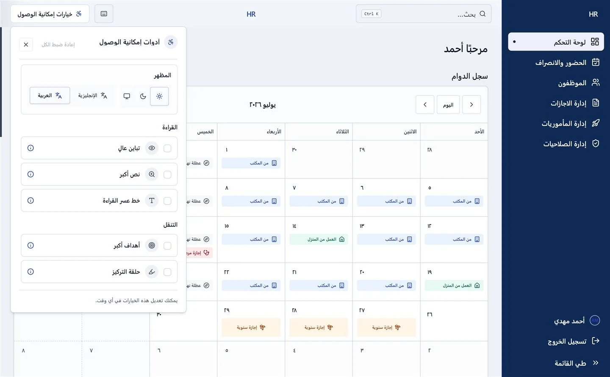

Enterprise SaaS • B2B Workflow UX
Human Resources Tool
HR SaaS application featuring streamlined leave management and role-based permissions.
01 Context & Challenge
Enterprise employees and HR managers struggled with convoluted leave requests, unclear role permissions, and repetitive manual approval workflows.
02 Approach & Key Decisions
Designed a privacy-conscious, bilingual (EN/AR) dashboard that centralizes leave tracking, attendance logs, and role permissions with clear accessibility cues.
Key Design Decision
Architected a 2-click leave approval matrix with inline audit trails, reducing approval turnaround from days to minutes.
03 Tools & Technologies
Figma
Bilingual RTL/LTR
Design Tokens
SaaS UX
User Flows
Accessibility
04 Outcome & Impact
Boosted employee self-service satisfaction and minimized HR administrative overhead across team operations.
05 Evidence & Next Validation
Interactive prototype validated through employee task-completion testing and workflow usability audits.